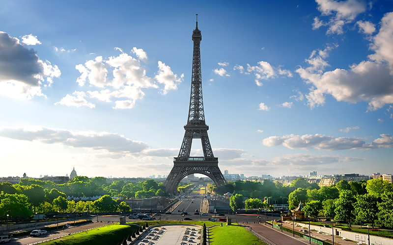
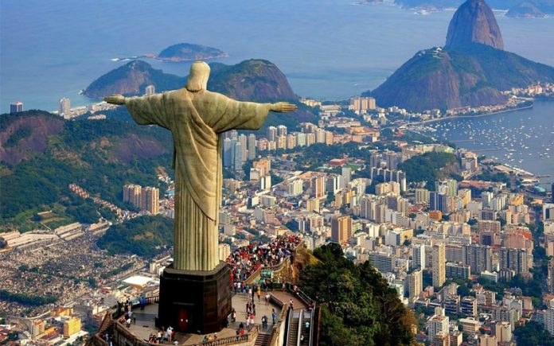
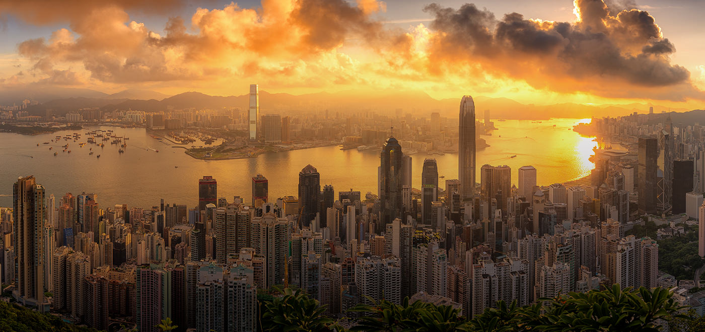
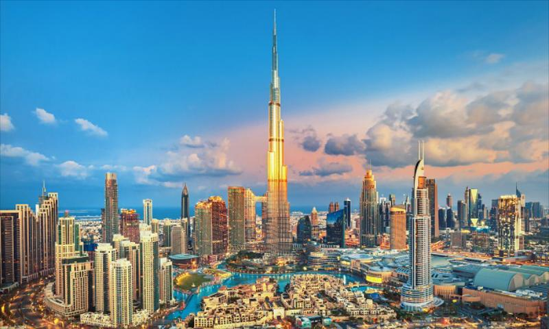
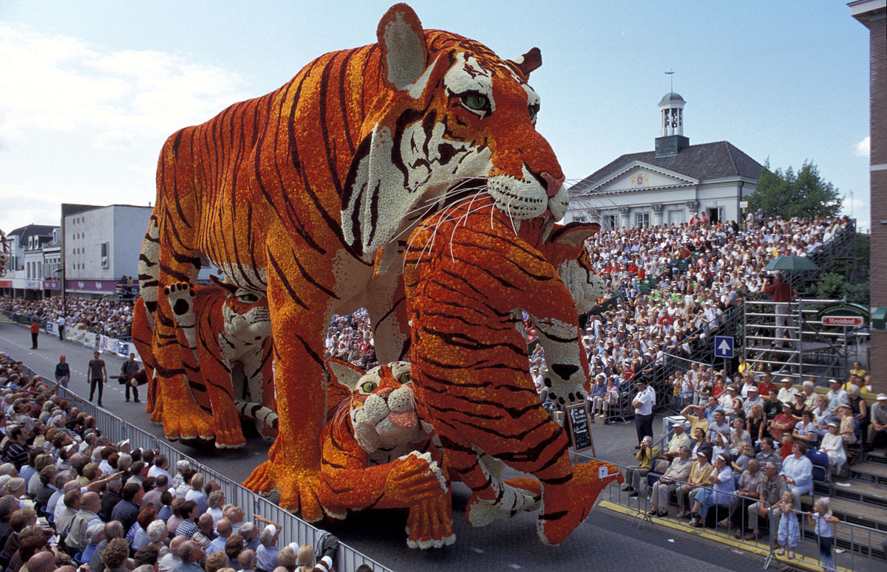

Pek çok insan hayatı boyunca dünya üzerinde kesinlikle görülmesi ve yaşanması gereken yerlerde bulunmak ister. İnsanoğlunun doğasında olan “bilinmeyeni bilme ve keşfetme isteği” çoğu insanın dünya üzerindeki turistik mekanları hayatında bir kez görme isteği barındırır. Eğer siz de seyahate düşkün biriyseniz ya da Dünya turu için doğru yerleri keşfetmek istiyorsanız işte Dünya'da mutlaka görmeniz gereken en güzel yerleri sizler için derledik.
Venedik

Renkli renkli evleri, görkemli kiliseleri, muazzam görüntüdeki kanalları ve de manzara eşliğinde sürülen sandal keyfi ile Venedik, Dünya'da kendine has mekanlardan bir tanesidir. Burada müthiş fotoğraflar çektirebilir, şarapları tadabilir, sandal sefası sürebilir ve Venedik sokaklarında dolaşabilirsiniz.
Fransa'da mutlaka görülmesi gereken yerlerin başında gelen Paris'te yer alan Eyfel Kulesi, yılda milyonlarca turiste ev sahipliği yapan Fransa'nın sembolik turistik yapılarından bir tanesidir ve kesinlikle görülmeye değerdir. Buranın yeryüzündeki en romantik yer olarak bilinmesine şaşmamak lazım!
Eyfel Kulesi-Fransa
İstanbul-Türkiye

Doğu ve batının birbiriyle kucaklaştığı şehir. Heybetli camileri ve kalabalık çarşılarıyla İstanbul binlerce yıldır övünç kaynağıdır ve üstelik günümüzde bile her zamankinden daha önemli bir şehirdir.
Şehrin en önemli tepesi olan Corcovado Tepesi, Rio’nun en güzel göründüğü yerlerden bir diğeri. 700 metreden yüksek olan bu tepeye zaten başka bir nedenle de gelmeniz gerekiyor. Dünyaca ünlü Kurtarıcı İsa Heykeli burada! Bu heykel Rio De Janeiro gezilecek yerler listesi içinde yer alan açık ara en önemli durak. Şehrin sembolü olan heykel, 30 metrelik yüksekliğe sahip. Corcovado Tepesi’ne yürüyerek çıkmak istemezseniz her gün 08.00 –19.00 saatleri arasında düzenlenen tren seferleriyle de kolayca ulaşabilirsiniz. Tepenin zirvesine ulaştığınızda şehrin muhteşem manzarasının yanı sıra Kesme Şeker Dağı, Maracana Stadı, Guanabara Körfezi gibi Rio harikaları da tam karşınızda olacak.
Brezilya
Cinque Terre-İtalya
Denize dimdik inen kayaların üzerine kurulmuş beş kasaba. Otomobilin yılın büyük bir bölümünde kullanılamadığı, ulaşımı sağlamak için eski tren yollarını ya da patikaları kullanmanın mecburi olduğu, dış dünyadan izole edilmiş, çekici bir turistik lokasyon. Sıcak renklerdeki sevimli evler, yeşilin ve mavinin her tonu, Ortaçağ yapıları...
Hong Kong ya da resmî adıyla Çin Halk Cumhuriyeti Hong Kong Özel İdari Bölgesi, Güney Çin Denizi kıyısındaki İnci Nehri Deltası'nda bulunan ve Çin'e ait olan bir metropolitan alan ve özel idari bölgedir. 1.104 km2'lik alanı içerisinde 7,4 milyon kişiyi aşan çok uluslu nüfusunu barındıran Hong Kong, dünyada nüfusun en yoğun olduğu yerlerden biridir.
Hong Kong-Çin
Dubai-Birleşik Arap Emirlikleri
Dubai veya Dübey, Arap Yarımadası'nda Birleşik Arap Emirlikleri'ni oluşturan yedi emirlikten birisidir. Emirlik'in yönetim biçimini ve kapladığı tüm alanı ifade eden Dubai Emirliği'nden; Dubai Kenti tanımlaması ile ayırt edilir. Dubai, 1900'lü yıllarda küçük bir balıkçı ve liman kasabasıydı. 1930'larda Dünya Genel Ekonomik Krizinin, Dubai İnci Piyasasını da etkileyerek çökmesine yol açmasından uzun bir süre sonra 1969'da Dubai'de petrol bulunarak ihraç edilmeye başlandı. Bölgeyi himayesinde bulunduran İngiltere 1968'de bölgeden çekileceğini açıkladı. İngiltere'nin bölgeden çekilmesinden sonra Dubai, 2 Aralık 1971'de Abu Dabi, Şarika, Acman, Füceyre ve Ummül Kayveyn emirlikleri monarşik bir federasyon yapılanması ile birleşerek Birleşik Arap Emirlikleri'ni kurdular. 1972'nin başlarında Resü'l-Hayme de diğer altı emirliğe katıldığında Birleşik Arap Emirlikleri'nin bugünkü yedi emirlikten müteşekkil yapısı oluştu. Bölgede petrolün bulunmasından sonra Dubai'nin geliri devamlı ve hızla yükseldi ve emirlik bir ticaret, alışveriş ve turizm kenti hâline geldi.
Ayrıca Bakınız
San Fermin Festivali - İspanya
İspanya’nın geleneksel kutlamalarından olan San Fermin Festivali denildiğinde ilk akla gelen boğaların sokaklarda koşması olsa da aslında organizasyon oldukça geniş kapsamlı etkinliklere ev sahipliği yapıyor. 6 - 14 temmuz tarihlerinde gerçekleşen bu festivalde boğaların koşması sırasında kazalar ve yaralanmalar söz konusu olabiliyor. Katılımcılara özellikle dikkatli olmaları konusunda bilgi veriliyor. San Fermin’e katılım ücretsiz ancak bazı etkinlikler ekstra ücretli olabiliyor.
Bloemencorso festivali - Hollanda
Yüzyıllarca Dünya'nın kalbi olarak nitelendirilen Roma'nın gezilecek yerleri, tarihi yapıları, Roma Collesiumu, Pisa Kulesi gibi pek çok turistik ögesiyle adeta tarihi bir müze. Sizler de bu güzide şehri ziyaret ederek bir müzede geziyormuş hissine kapılabilir, değerli anılar biriktirebilirsiniz.
MY WORLD
Vizesiz gidilebilecek ülkeler
- Makedonya
- Ukrayna
- Kosova
- Arnavutluk
- Sırbistan
- Kuzey Kıbrıs
- Bosna-Hersek